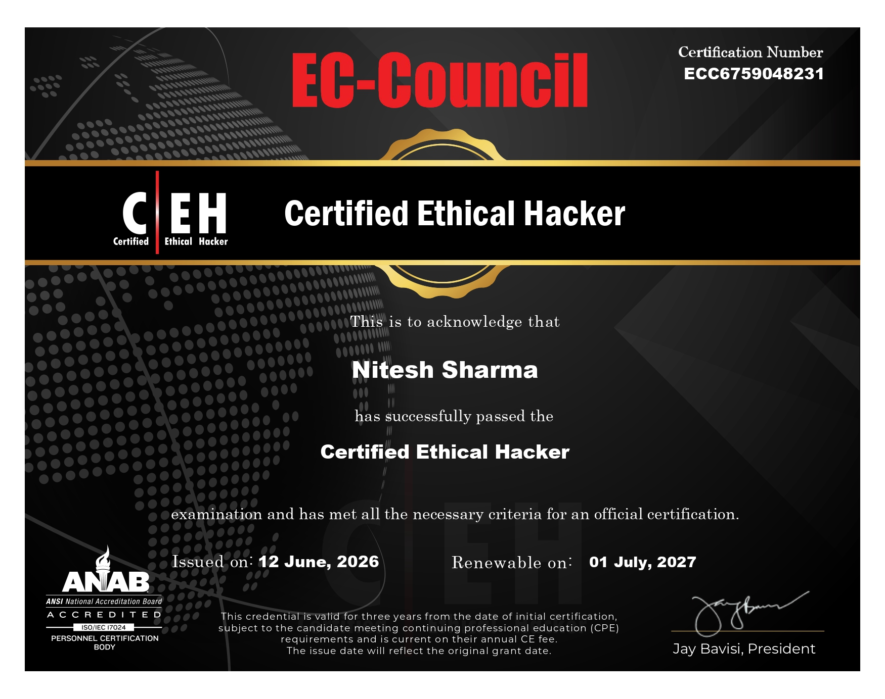
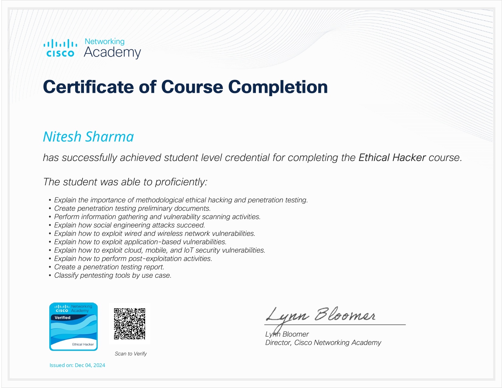
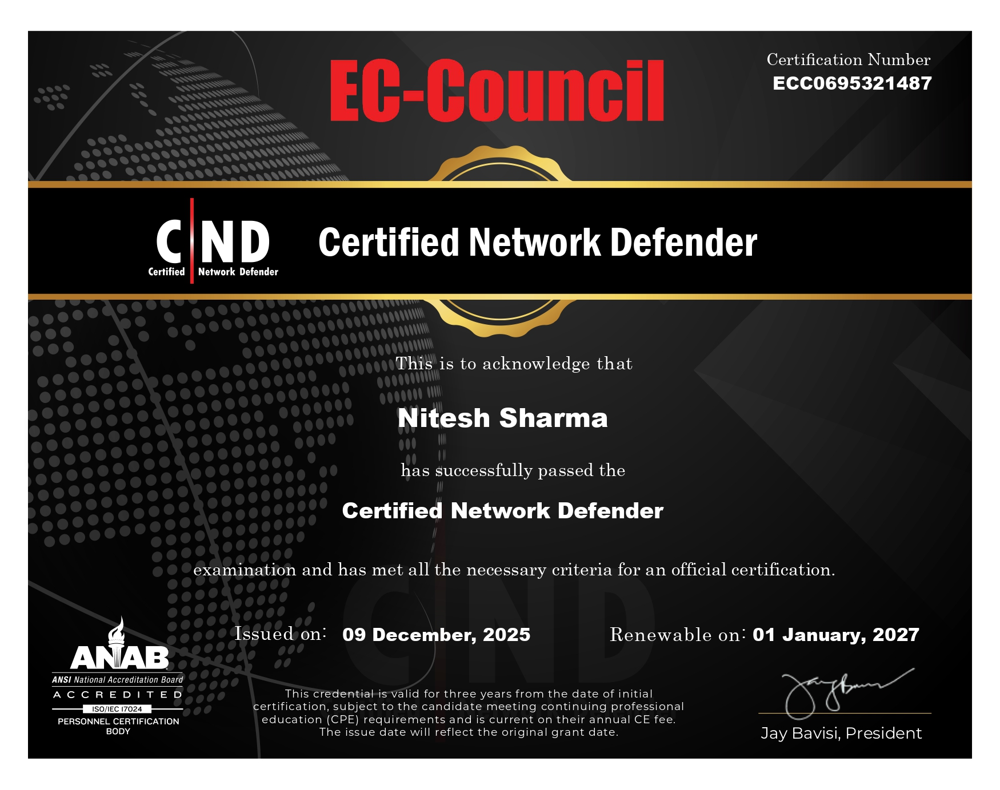
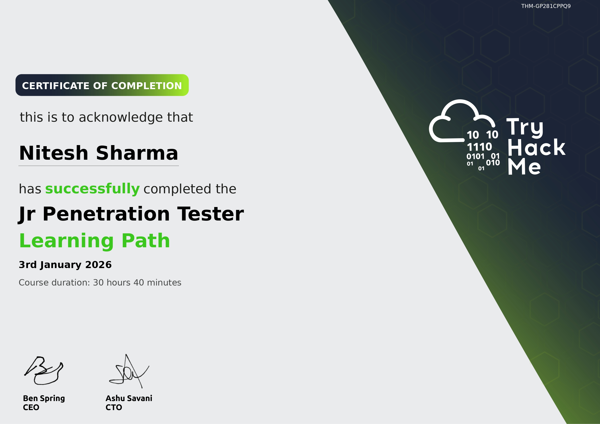
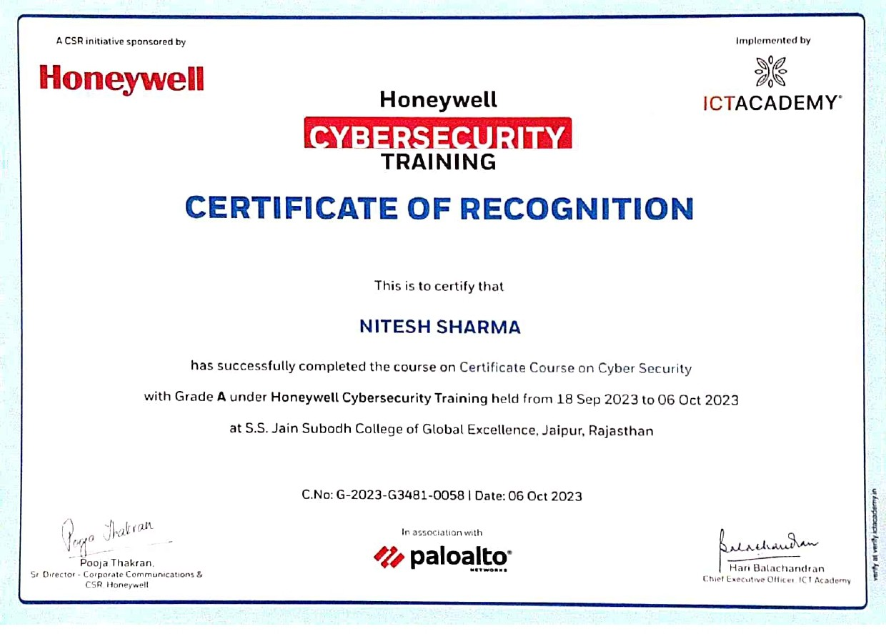
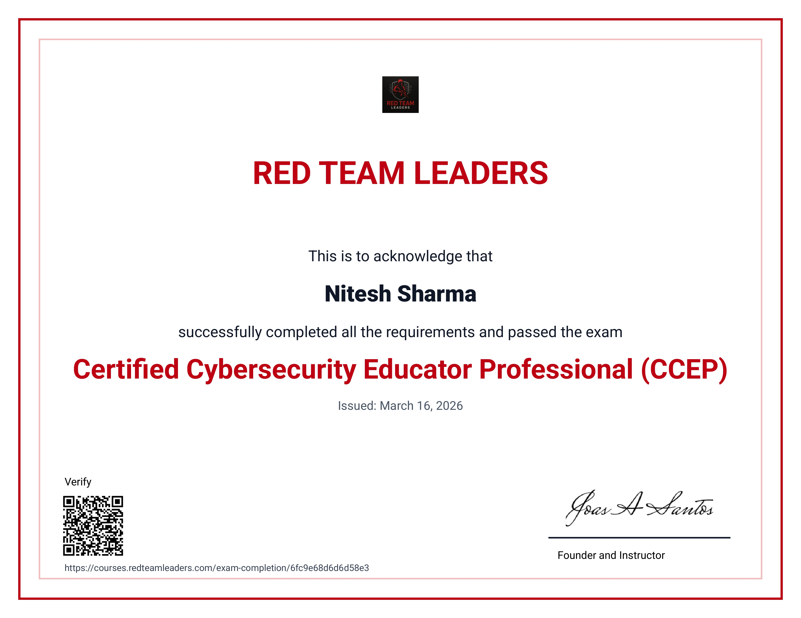
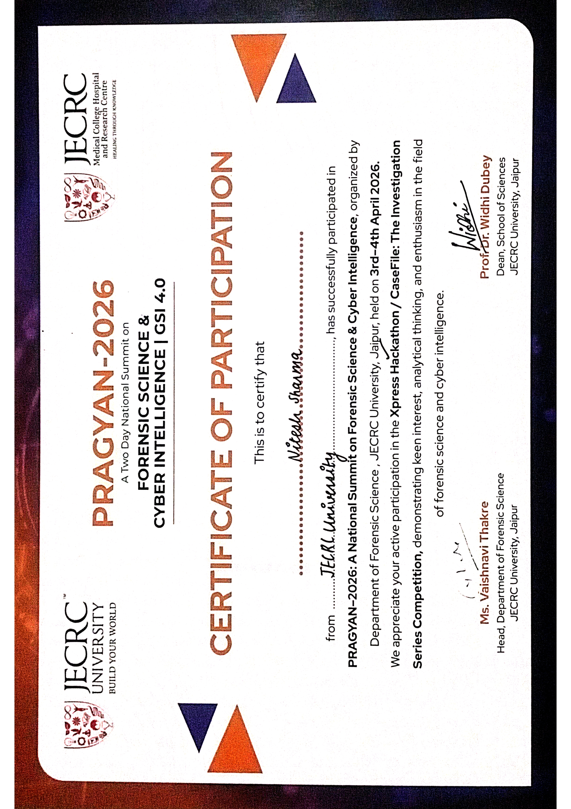

Aspiring cybersecurity enthusiast skilled in ethical hacking, CTF challenges, and secure system practices. Passionate about ethical hacking and the Kali Linux ecosystem.
I'm Nitesh Sharma, A cybersecurity explorer based in Jaipur, passionate about ethical hacking, offensive security, and vulnerability assessment. Continuously learning and exploring how systems work and how security weaknesses can be identified and prevented.
My interests include web application security, vulnerability assessment, networking fundamentals, CTF challenges, and learning cybersecurity tools and OSINT techniques. I use Kali Linux as my primary learning platform and actively exploring cybersecurity tools, projects, and open-source security resources.
When I'm not hunting bugs, I'm writing write-ups on TryHackMe, playing CTFs, or mentoring upcoming security enthusiasts. I believe security knowledge should be democratized and accessible.

Globally recognized ethical hacking certification from EC-Council focused on penetration testing, vulnerability analysis, attack methodologies, network defense, and real-world hands-on cybersecurity practices.

Industry-recognized cybersecurity certification from Cisco covering penetration testing fundamentals, vulnerability assessment, networking security, and hands-on practical cybersecurity concepts.

Comprehensive cybersecurity certification from EC-Council focused on network defense, firewall management, Active Directory security, threat monitoring, and protecting enterprise systems from modern cyber attacks.

Hands-on cybersecurity learning path from TryHackMe focused on penetration testing fundamentals, network security, web application testing, enumeration techniques, privilege escalation, and practical ethical hacking skills.

Cybersecurity bootcamp completion from Honeywell focused on network security testing, packet analysis using Wireshark, network scanning, basic exploitation techniques, incident response, and securing enterprise infrastructure.

Professional cybersecurity certification from RedTeam Hacker Academy covering web application security, vulnerability assessment, reconnaissance techniques using industry-standard cybersecurity tools.

Covers digital evidence collection, analysis, chain of custody, memory forensics, and incident response procedures for investigating cybercrime.